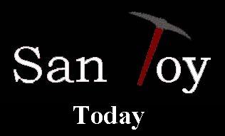
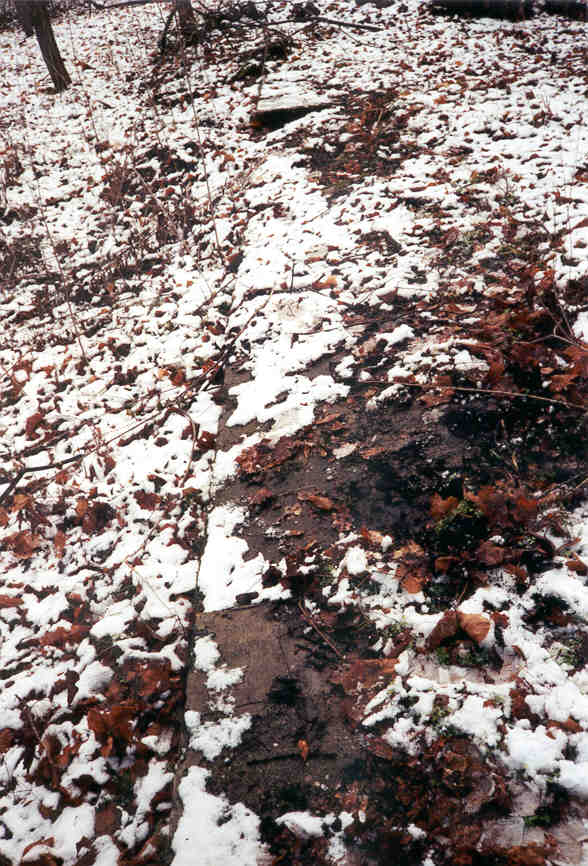
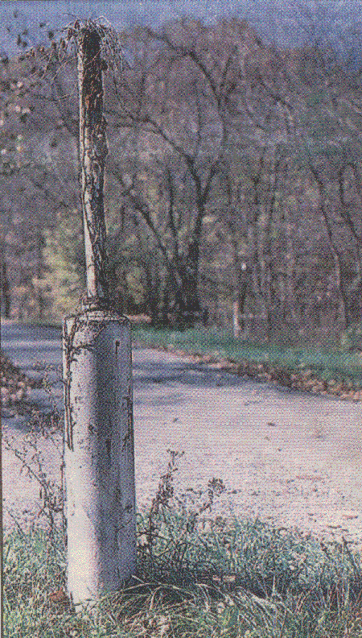
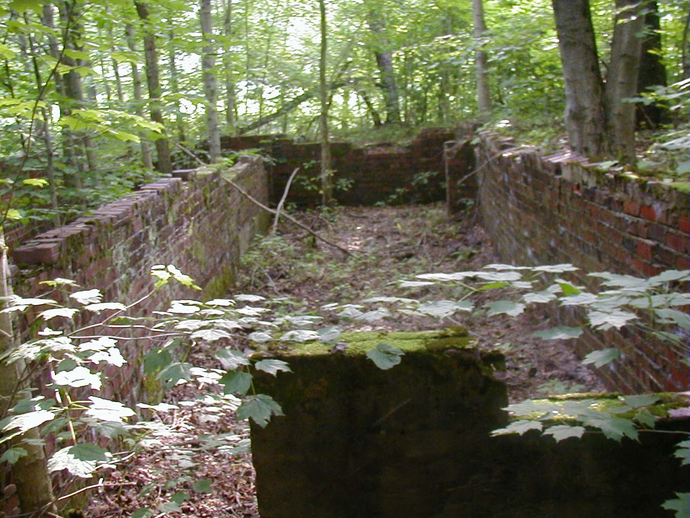
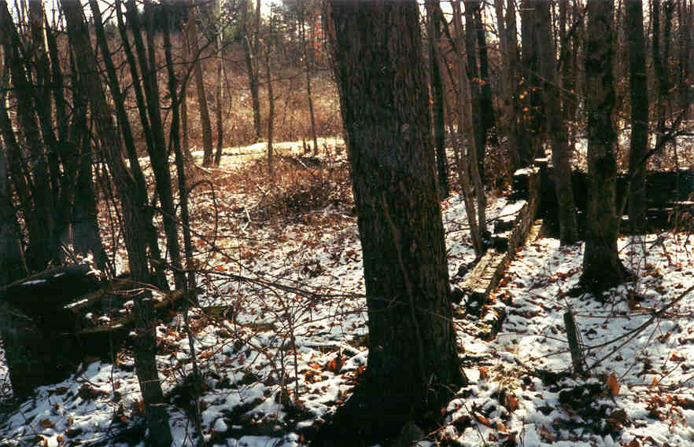
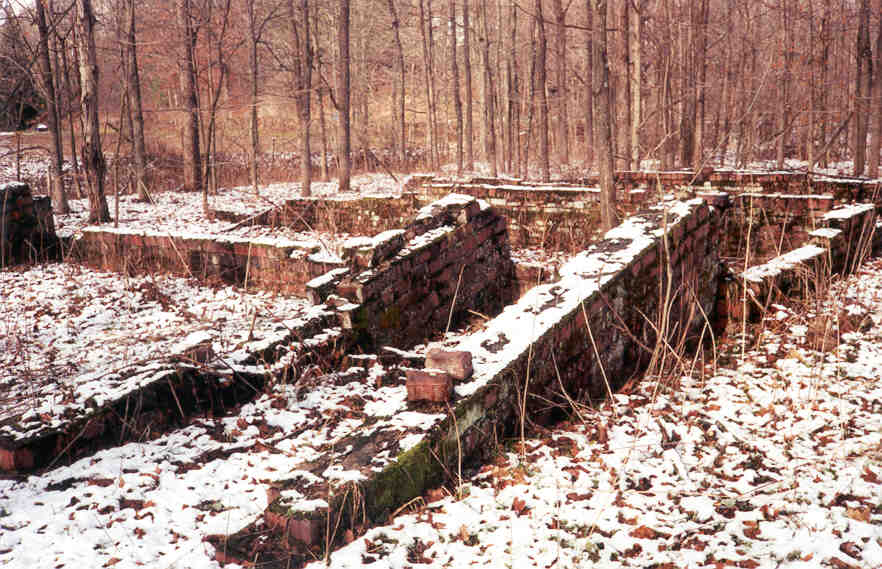
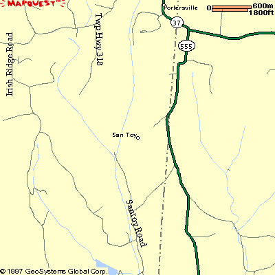

The signs that a town once stood here are immediately visible, if you know what you're looking for. First of all, the gravel road shows brick cobblestone streets underneath, in places--the streets of San Toy.


Also present are crumbling sidewalks and even a primitive traffic light, which was one of the first in the county. It's so overgrown with vines that you really have to know what it is to recognize it.

But what San Toy consists of today is mostly foundations. They're everywhere on either side of the road, stretching back into the trees. These were mostly miner's homes, and pacing the diameter of the brick foundations gives you an idea of the conditions they lived in.

The picture above shows you how close the quarters were; the outside steps of one building almost touch the back of another. Click below to view more of the building foundations in San Toy.

Foundations
The mines are still there, too; I've been able to locate one. To take a look at the mine, click below.

The Mine
The only building still standing in San Toy is the old jailhouse. To take a look at it, click below

The Jailhouse
San Toy is located in Brown Township in Perry County, on San Toy Road, which runs off State Route 555. It's near Corning, close to McConnelsville and New Straitsville, and is actually not too difficult to locate, if you're willing to make the drive and you go when the sun's still up. The remains of the town are a fascinating reminder of Ohio's coal mining heritage.

Back
forgottenohio@yahoo.com